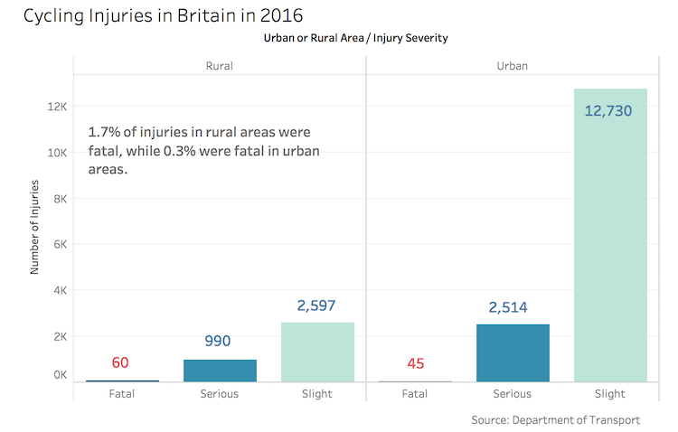

More than 100 fatal cycling accidents in Britain in 2016
A total of 105 people died in bicycle-related accidents on British roads in 2016, according to data released by the Department of Transport.
Overall, there were 18,936 injuries from bicycle-related accidents in 2016, more than 3,000 were considered serious.
The majority of cycling injuries occurred in cities and towns, but cyclists are more likely to be involved in deadly accidents on roads in the countryside.
The majority of cyclists were killed in accidents involving one or two other vehicles, but 17 died with no other vehicles present and most of these deaths took place in the countryside.
In an attempt to reduce cycling accidents, the West Midlands police have instituted Operation Close Pass, an initiative aimed at teaching drivers to safely share the road with cyclists.
Cycling UK, a group campaigning for road-safety for cyclists, are calling for police across Britain to follow the example set by the West Midlands police and put Operation Close Pass into practice in their own departments.
Police Constable Mark Hodson, from the West Midlands Police's Force Traffic Unit said reports of close-passes have been reduced by half in the West Midlands since the project started.
“I am in no doubt the operation has played a big part in that reduction,” Mr. Hodson stated.
Aside from accidents involving cars, three pedestrians were killed in cycling accidents in 2016. More than half of these, fatal or non-fatal, took place in non-pedestrian areas, where a pedestrian was crossing the road outside of a designated crosswalk, for example.